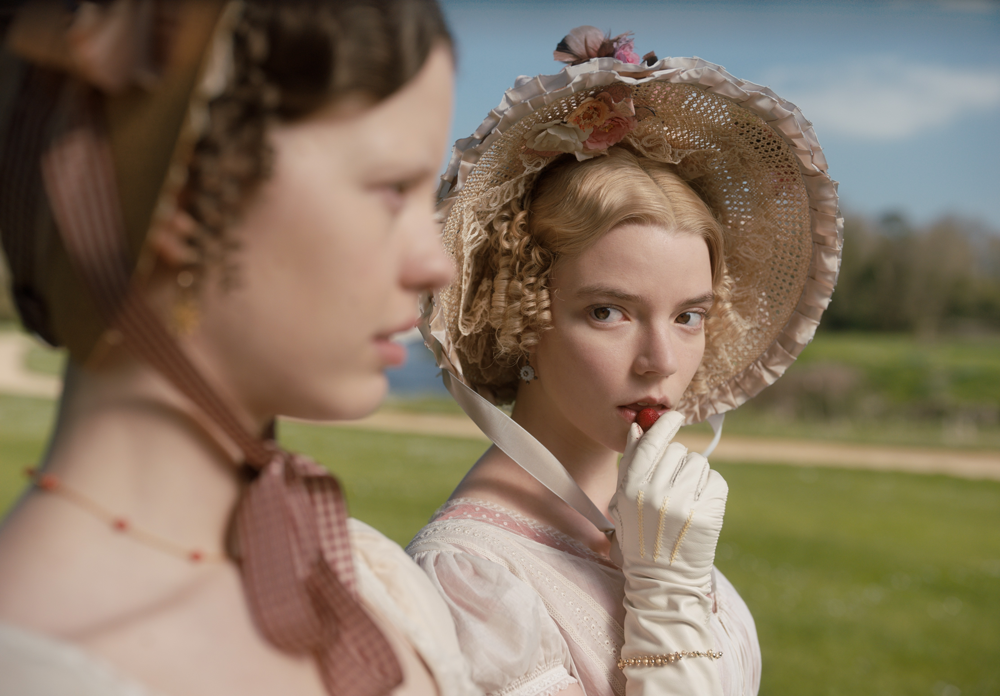

Friday: The Breakfast Club
Posted Friday 3rd of March

Five high school students, all with different mindsets,
face detainment in their school library on a Saturday morning.
As time passes by, their egos fade and they become close buddies.
Thursday: All about Emma
Posted Thursday 2nd of March

Emma, by Jane Austen, is a novel about youthful hubris and romantic misunderstandings.
It is set in the fictional country village of Highbury
and the surrounding estates of Hartfield, Randalls and Donwell Abbey
Wednesday: My Own Private Idaho (Starring River Phoneix and Keanu Reeves)
Posted Wednesday 1st of March

My Own Private Idaho is a 1991 American independent adventure drama film
written and directed by Gus Van Sant, loosely based on Shakespeare's Henry IV,
Tuesday: The Third Man